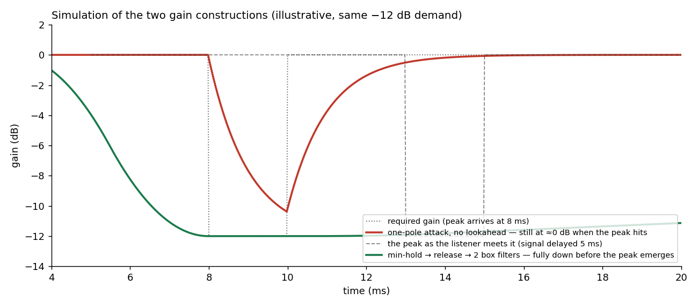
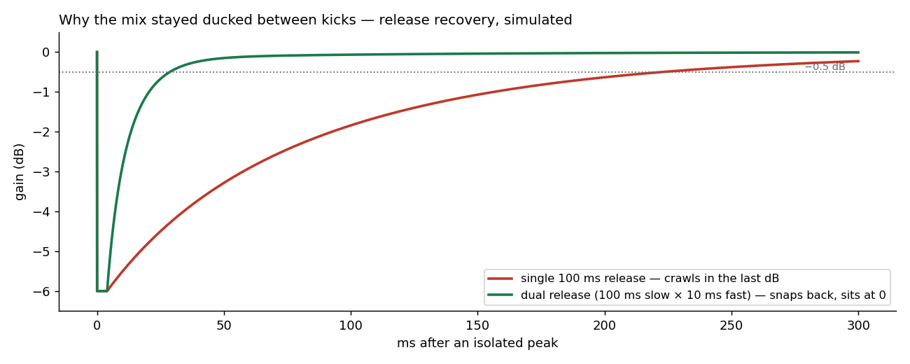

The Limiter That Couldn't See
How a master limiter cracked every big transient, and what it took to give it eyes.
1. The problem: the knock
Users described it as a knock, a dry crack riding on top of every big kick, worse the louder the mix ran. The master stage had a limiter, and the limiter had a ceiling, and the ceiling was being enforced. Just not by the limiter.
Klang's compressor was feed-forward with zero lookahead: the detector saw each sample at the same instant the gain
stage did. Against a fast transient that is too late. Measured on the real Compressor with the master stage's
own constants, a 55 Hz kick at +18 dB over the ceiling passed through with the gain still at exactly 0.00 dB one
millisecond in: the detector's smoothed envelope had not yet crossed threshold. The ceiling was enforced by the hard
clip that sits after the limiter as a last resort:
| kick peak in | peak out (pre-clip) | hard-clipped for |
|---|---|---|
| 0 dBFS | −0.33 dBFS | 0 ms |
| +6 dBFS | +5.67 dBFS | 3.99 ms |
| +12 dBFS | +11.67 dBFS | 5.22 ms |
| +18 dBFS | +17.67 dBFS | 5.90 ms |
Every loud transient was a 2 to 6 ms square-edged burst, and the window grew with the amount of limiting, which is exactly what "it knocks when it has to limit a lot" had been telling us.

Fig. 1: the same kick test before and after. The "before" bars aren't a limiter failing gracefully; they're a clip doing the limiter's job.
2. The obvious fix doesn't work
"Add lookahead" sounds like one parameter. It is not. Delaying the signal so the detector sees the future is not enough by itself: the gain still moves through the same too-slow attack. Measured, +12 dB kick, 1 ms one-pole attack:
| lookahead | delay only | + running-max detector |
|---|---|---|
| 0 (today) | +11.67 dBFS | (none) |
| 1.5 ms | +11.67 | +10.16, still clips |
| 3.0 ms | +4.86 | +1.57, still clips |
| 5.0 ms | +3.64 | 0.00, still clips |
(The ceiling sits at −0.35 dBFS, so a 0.00 dBFS peak is still a clip.)
A one-pole with τ = 1 ms needs several τ to settle; it cannot reach full reduction inside any sane window regardless of how early it is warned. Three things must change together: a delay line, a detector that looks across the whole window, and an attack shape that completes inside it. And even then our first prototype had a hole: two peaks arriving 0.2 to 0.5 ms apart restarted the attack ramp mid-flight, and the second one clipped.
3. Prior art: the problem is solved, credit where due
The construction that handles all of it (any number of peaks in the window, no special cases) comes from Geraint Luff's Designing a straightforward limiter [1]:
- compute the per-sample required gain from the undelayed signal;
- take a moving minimum over the lookahead window; this is what makes the gain start falling before the peak, for every peak in the window;
- a release stage: instant down, one-pole up;
- smooth with two cascaded box filters (C¹ by construction, so no corners for the ear to find);
- delay the signal by the window and apply.

Fig. 2: the two constructions against the same −12 dB demand (simulation). The one-pole is still near 0 dB when the peak hits; the min-hold gain is settled at −12 dB before the delayed peak emerges.
Two details cost us real debugging and deserve the ink:
The budget arithmetic overlaps; it does not add. An early revision budgeted lookahead = window + smoothing.
That was wrong, and it clipped. Every term entering the smoother must already respect the gain required at the sample
emerging from the delay, which forces L ≥ D + 1 and bounds the smoothing inside the window, in taps, not
milliseconds (ceil-rounding drifts by a sample, and one sample is a click). Luff's article states the equivalent
insight; our prototype independently found the failure before we found the article.
The release goes before the smoother. The tempting arrangement (smooth first, then min with a one-pole
release) is C¹ everywhere except the crossover between the two paths, where the gain slope drops about 40× in one
sample. That corner is the same artifact class the two-box cascade exists to prevent; putting release before the boxes
keeps the entire trajectory C¹ and the safety proof one line: release ≤ held pointwise, so box(release) ≤ box(held) ≤ required.
4. Results, and the pump we decided to keep paying for
With 5 ms of lookahead and the construction above, the +12 dB kick exits at −0.37 dBFS with zero samples clipped
(the old path: +11.67 dBFS, 5.22 ms of clipping). The knock was gone, confirmed by ear the same day. One honest
boundary: at ratio 20:1 the residual above threshold is overshoot/ratio, so around +20 dB over ceiling the "brickwall"
admits up to a full decibel and the hard clip quietly returns as the true last resort. That bound is arithmetic, not a
bug, and it is documented rather than hidden.
Then the by-ear pass found the next problem: with clean catches came a pump: the bed stayed ducked between kicks, swelling continuously on dense material. Measured at realistic drive, the mix was still 1.25 dB down 100 ms after each kick. The fix was a dual release: a slow one-pole (100 ms) that absorbs sustained reduction, times a fast branch (release/10) that handles the residual, instant down, quick up.
| release design | recovery to −0.5 dB | beat-rate gain mod | mean GR |
|---|---|---|---|
| single 100 ms | 187.1 ms | 0.97 dB | −0.76 dB |
| dual 100/10 ms | 23.5 ms | 0.37 dB | −0.24 dB |

Fig. 3: why the bed stayed ducked between kicks: a single exponential release crawls in its last dB. The dual release snaps back and sits at zero. (simulation).
And here is the honest part: when we A/B'd it level-matched on material built to be maximally unkind, the audible pump difference was "really subtle." The dual release shipped anyway, for the loudness. At an identical output ceiling the mean level rose from −1.59 dB to −0.55 dB, because the mix simply spends less time ducked. Same peak, one dB louder, one extra divide per sample on a single instance. We came for the artifact and stayed for the headroom.
5. What the peak meter never told us
The lesson that outlived the feature: output peak told us very little about a limiter's quality, because every broken variant we built had a defensible peak number at some setting. The measurements that did catch things: non-fundamental energy on a sustained low sine (catches release misbehavior the peak can't see), the gain trajectory itself as a signal (max |Δgain| per sample; the C⁰ corner shows up there and nowhere else), and a ramp-length invariance sweep (a correct construction must produce the same peak at any smoothing length; any difference is a shape bug). The invariance sweep now guards the suite alongside the dual-release test ("the bed recovers between kicks"), both mutation-checked: collapsing the dual release back to a single branch turns the suite red. The other two remain development-harness measurements for now, with the gain-trajectory probe first on the wishlist.
One asymmetry is deliberate and spec-pinned: only the house limiter has lookahead by default. An authored limiter
with latency would delay its orbit or its playback against every other one, so the authored limiter() stage of a
Katalyst chain (the effect chain a song declares for a bus) defaults to zero lookahead, and a test asserts the
divergence as a relation, authored less than house, so nobody "fixes" it. It is a default, not a wall: the knobs are
there (master(Katalyst(k => k.limiter(lookahead = 0.005, attack = 0.005))), both in seconds) for anyone who wants
the clean catches on an authored chain and accepts the latency that comes with them (capped at 50 ms, since lookahead
is the one parameter that sizes a buffer on the audio thread).
The limiter can see now. What it watches over is the same song, one decibel more of it.
References
- Luff, G. (2022). Designing a straightforward limiter. Signalsmith Audio. signalsmith-audio.co.uk/writing/2022/limiter: the moving-minimum, smoothing, delay construction, and the insight that the smoothing budget lives inside the lookahead window.